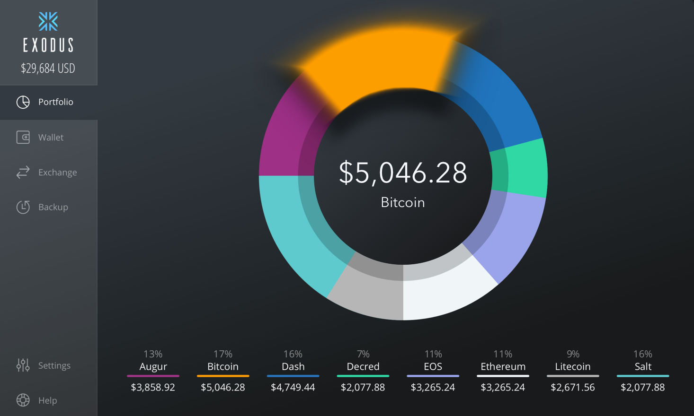
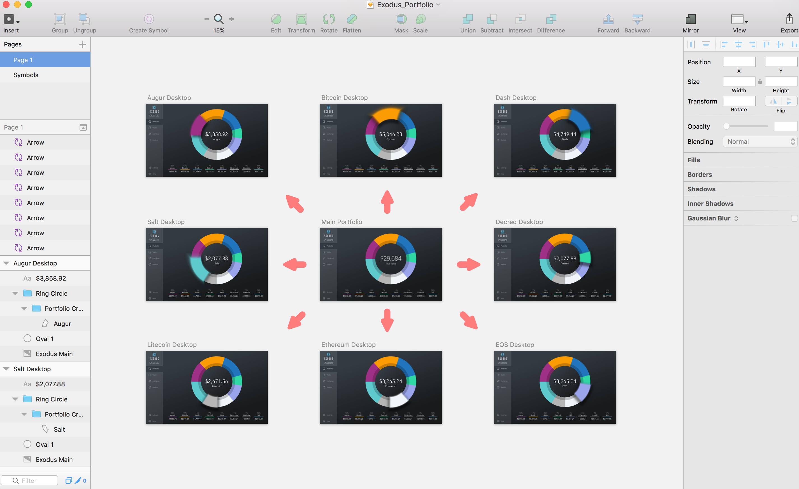
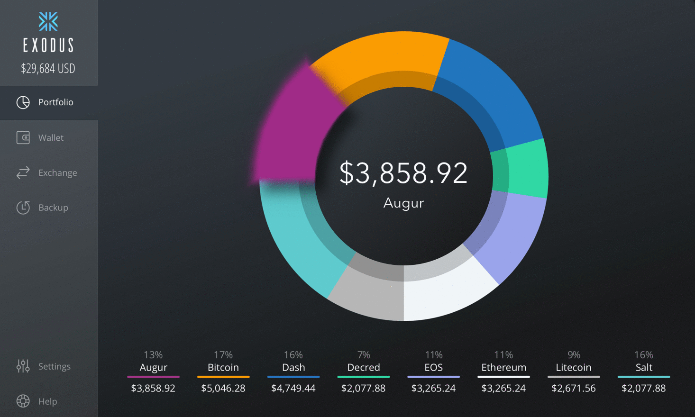

Exodus

Exodus Challenge
- The Exodus UI/UX challenge is to re-design/re-concept any portion of Exodus website or desktop application you feel you could derive more value. This assignment is purposefully vague. We are looking for leaders who are good decision makers. Successful candidates hired for this role will have the ability to lead and direct creative projects from concept to completion.
- This is your chance to grab an open-ended challenge and make it yours. We are looking for confident individuals, quick to make decisions, to help Exodus move forward. You are not limited to current website layouts or functionality - use your imagination to craft a compelling narrative to showcase your unique talents.
- Work showing your process including wire framing, UI/UX choices, and descriptions of the how and why behind your decisions make better case studies. Bonus recognition for responsive mockups, video presentations, UI/IX library foundations and animation/sound examples. Further recognition for code and development choices showcasing components and how modular components build to create a flexible creative structure.
Insight
- Project Background - The purpose of the project was to create a design that expands the functionality of Exodus Wallet while respecting the aesthetics already in place.
- Research - As more altcoins emerge in the cryptocurrency industry the challenge was to brainstorm ways to know exactly how much of each altcoin a user has in their portfolio.
- Project Goal - Provide an aesthetic experince for users when engaging in their cryptocurrency portfolio.
Process
- Subjective approach - We began the process by identifying what's already in place: The Exodus Portfolio. A user will periodically want to see their cryptocurrency assets. We expanded on this and added a feature where if a user hovers over any color in their portfolio ring then the selected cryptocurrency asset floats and displays the current amount for that particular cryptocurrency.
- Objective approach - We utilized Sketch to create medium fidelity wireframes, incorporating a subtle zoom blur when hovering over any cryptocurrency in their portfolio. In addition, we added light shadows when the cryptocurrency asset is hovered over to illicit a Space Odyssey feel. Finally, we also added a feature to reflect the value in the center of the portfolio ring to the amount of the cryptocurrency asset being hovered over.
- Prototyping - We went ahead and utilized InVision to prototype high fidelity compositions, consistently making sure the subjective and objective approaches are linked as a union. One of the main challenges was deciding which light direction was applied for the shadows, trying different angles and receiving different emotional responses. After numerious experiments, we decided the light would come from above, radiating shadows from three sides to fit with Exodus existing feel and theme. Feel free to try out the interactive version here.
- Result - An interative approach to Exodus Wallet experience, providing users to quickly navigate exactly how much of each cryptocurrency asset the user has in addition to updating in real time based on the market prices. We hope this feature brings new and existing cryptocurrency users to Exodus platform as users are able to quickly navigate the amount of each cryptocurrency asset, making rapid decisions to sell, trade, or invest.


About Tam
- Tam grew up having a bowl but hairstyle. During his childhood he owned the playgrounds in tetherball and chess. To experience what a true bowl cut hairstyle is click here.
- Tam was into visual arts all throughout highschool, exploring many different mediums ranging from panting, screen printing, and graphic design. Tam enrolled at the University of Oregon and graduated with majors in economics and psychology with a minor in business. He later went to a trade school for programming and user experience design.
- Tam's hobbies include: biking, soccer, yoga, trading and investing in cryptocurrencies, and cooking from scratch. Tam resides in Portland, Oregon.